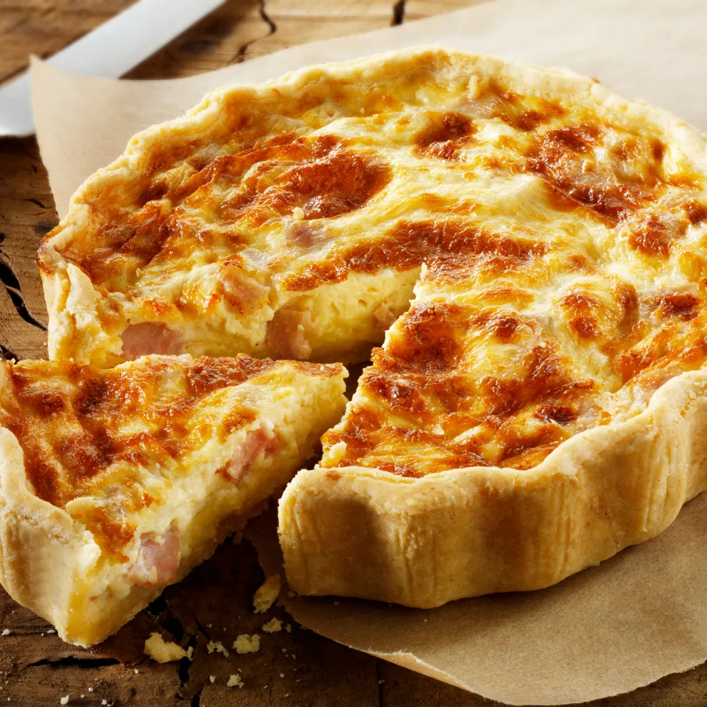

Quiche

Description
Quiche Lorraine is a classic French savory tart that epitomizes elegance and simplicity.
Originating from the Lorraine region, this delectable dish features a buttery and flaky pie crust filled
with a luscious mixture of eggs, cream, and a signature filling of crisp bacon or lardons.
The creamy custard base is enriched with the smoky flavor of bacon, creating a harmonious blend of textures and tastes.
Often enhanced with a touch of nutmeg or herbs, Quiche Lorraine is a timeless culinary delight
that effortlessly marries the richness of its ingredients, resulting in a savory pie
that is both sophisticated and satisfying.
Ingredients
- Pie crust
- Lardons
- Eggs
- Heavy cream
- Milk
- Salt and black pepper
- Nutmeg
- Swiss or Gruyère cheese
Steps
- Preheat your oven to 375°F (190°C) and prepare a pie crust in a quiche pan.
- Cook 6-8 slices of bacon until crisp, then crumble them.
- In a bowl, whisk together 3 eggs, 1 cup of heavy cream, and 1/2 cup of milk.
- Season the egg mixture with salt, black pepper, and a pinch of nutmeg (optional).
- Sprinkle half of the crumbled bacon onto the pie crust.
- Pour the egg mixture over the bacon in the pie crust.
- Sprinkle 1 cup of shredded Swiss or Gruyère cheese on top.
- Add the remaining bacon on top of the cheese.
- Bake in the preheated oven for about 35-40 minutes or until the quiche is set and golden.
- Allow the Quiche Lorraine to cool for a few minutes before slicing and serving.
Enjoy this delightful savory tart warm or at room temperature